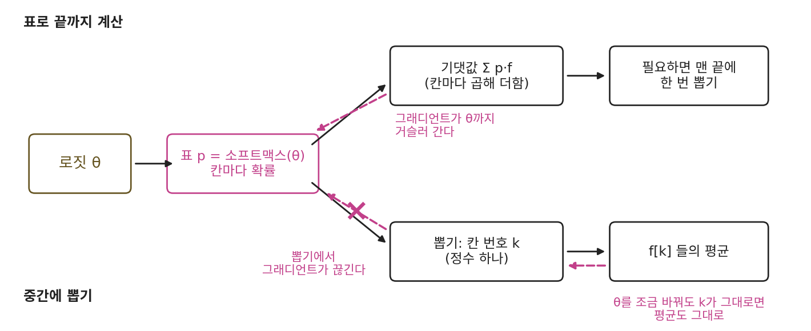
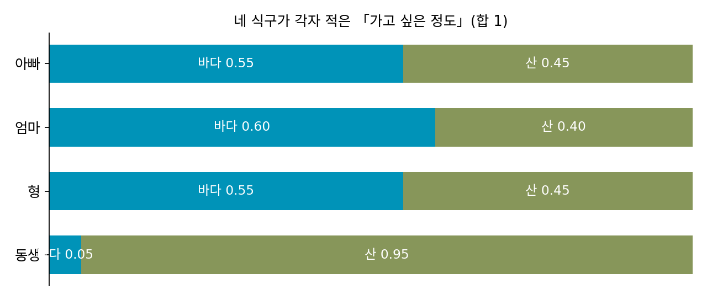
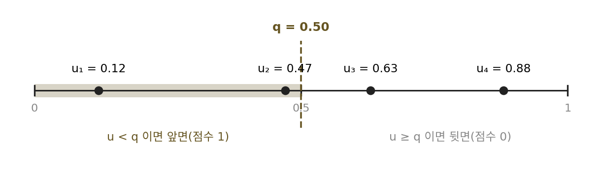
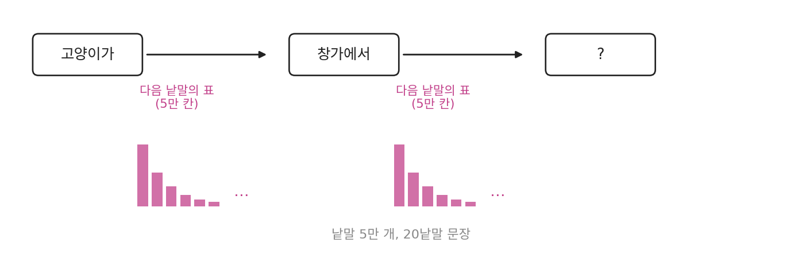

뽑는 시점: 끝까지 표로 계산하고 마지막에 뽑는다
실제 코드에서는 한 계산 안에서 분포의 꼴이 바뀐다. 분류기는 표를 내놓지만 화면에는 라벨 하나를 띄우고, 언어 모델은 낱말마다 표를 내놓지만 사용자에게는 문장 한 줄을 보여 준다. 표에서 숫자 하나나 샘플로 넘어가는 그 순간을 계산의 어디쯤에 두느냐에 따라 결과가 달라질까?
중간에 숫자 하나로 줄이면
사진 네 장을 넣은 분류기 출력 (0.92, 0.08), (0.15, 0.85), (0.60, 0.40), (0.05, 0.95)를 다시 쓰자. 칸마다 평균을 내면 고양이 칸이 0.43이고, 사진첩에서 고르게 뽑은 사진이라면 이 값으로 p(고양이)를 짐작할 수 있다. 같은 출력을 사진마다 먼저 라벨 하나로 줄이고(argmax) 고양이로 판정된 장수를 세면 넷 가운데 둘, 0.50이 된다. 세 번째 사진 (0.60, 0.40)이 「고양이」 하나로 줄면서 강아지일 확률 0.40이 사라졌고, 네 번째 사진의 고양이일 확률 0.05도 사라졌다. 표에 들어 있던 「얼마나 확실한지」를 중간에 지우면 뒤의 계산은 그 정보를 되살릴 수 없다. 그래서 원칙은 표로 계산할 수 있는 동안은 끝까지 표로 계산하고, 숫자 하나나 샘플이 꼭 필요할 때만 마지막에 한 번 줄이는 것이다.
뽑은 다음에는 그래디언트가 끊긴다
학습에서는 시점이 더 중요하다. 신경망을 학습시키는 일은 파라미터를 조금 바꿨을 때 점수가 얼마나 바뀌는지를 재고, 점수가 오르는 방향으로 파라미터를 옮기는 일이기 때문이다. 파라미터마다 잰 그 변화율을 모은 것을 그래디언트(gradient)라 한다. 응답 셋 가운데 하나를 고르는 모델로 재 보자. 모델은 로짓 θ(세타) = (1.0, 0.0, −0.5)를 소프트맥스로 바꿔 표 p를 내놓고, 응답마다 받는 점수는 f = (1, 0, 0.5)다. 응답을 셋으로 고른 것은 표로 끝까지 계산한 기댓값을 손으로도 셈해 볼 수 있을 만큼 작아서다. θ₁만 0.001 키웠을 때 평균 점수가 얼마나 바뀌는지를 두 가지로 잰다.
import numpy as np
theta = np.array([1.0, 0.0, -0.5]) # 로짓
f = np.array([1.0, 0.0, 0.5]) # 응답마다 받는 점수
def softmax(t):
z = np.exp(t - t.max())
return z / z.sum()
E = softmax(theta) @ f # 표로 끝까지: 기댓값 Σ p·f
d = np.array([0.001, 0.0, 0.0]) # θ₁ 만 0.001 키운다
print(f"표 : {E:.4f} → {softmax(theta + d) @ f:.4f}, 기울기 {(softmax(theta + d) @ f - E) / 0.001:.4f}")
u = np.random.default_rng(5).random(1000) # 난수 1000개를 고정해 두고
def sampled_mean(t): # 뽑은 다음 평균
k = np.searchsorted(np.cumsum(softmax(t)), u) # 칸 번호 k (정수)
return f[k].mean()
m0, m1 = sampled_mean(theta), sampled_mean(theta + d)
print(f"샘플 : {m0:.4f} → {m1:.4f}, 기울기 {(m1 - m0) / 0.001:.4f}")
# 표 : 0.6987 → 0.6988, 기울기 0.1894
# 샘플 : 0.7185 → 0.7185, 기울기 0.0000
표로 끝까지 계산한 기댓값 Σ p·f는 θ₁을 0.001 키우면 0.6987에서 0.6988로 오르고, 그래디언트의 첫 성분은 0.1894다. 뽑은 다음의 평균은 같은 난수로 다시 뽑아도 1,000개 가운데 칸이 바뀐 샘플이 하나도 없어서 0.7185에서 움직이지 않고, 그래디언트는 0이다. θ를 조금 바꾼 효과는 칸마다 뽑힐 확률을 조금 바꾸는 데 있는데, 뽑힌 칸 번호 k 는 정수라서 조금씩 움직일 수가 없다. 뽑기를 지나면 θ의 흔적이 남지 않는다.

응답이 셋이면 끝까지 표로 계산하면 되니 문제가 없고, 응답이 그림이나 문장처럼 셀 수 없이 많아서 Σ p·f를 적을 수 없을 때가 문제다. 그때는 뽑아야 하는데, 뽑으면 그래디언트가 끊긴다. 무작위로 정하는 부분을 계산의 맨 앞으로 옮겨 놓으면, 뽑기를 거치면서도 그래디언트를 흘려보낼 수 있지 않을까?
ML에서: 표에서 읽는 손실, 뽑아야 얻는 점수
분류기를 학습시킬 때 쓰는 크로스 엔트로피는 정답 칸의 −log p로, 표에서 칸 하나를 읽는 계산이라 뽑기 없이 로짓까지 미분된다. 언어 모델이 직접 뽑은 응답에 사람이 점수를 매기고, 그 점수를 올리도록 모델을 학습시키는 경우는 다르다. 응답의 가짓수가 셀 수 없이 많아 Σ p·f를 적을 수 없고, 응답은 뽑아야만 얻으므로, 뽑은 응답의 점수로 그래디언트를 얻는 방법이 따로 필요하다.
문제 16. 가족 여행지
네 식구가 이번 여름 바다와 산 가운데 어디로 갈지 「가고 싶은 정도」를 합이 1이 되게 적었다. 아빠 (바다 0.55, 산 0.45), 엄마 (0.60, 0.40), 형 (0.55, 0.45), 동생 (0.05, 0.95). (가) 식구마다 더 높은 쪽 하나로 줄여 다수결을 하면? (나) 네 줄을 칸마다 평균 내면? (다) 두 방법은 왜 다른 답을 내는가? 어느 쪽이 「식구들이 가고 싶은 정도」를 더 잘 담는가?


(가)는 아빠·엄마·형이 바다, 동생이 산이라 3 대 1로 바다야. (나)는 바다 칸이 (0.55 + 0.60 + 0.55 + 0.05) ÷ 4 = 0.4375, 산 칸이 0.5625라서 산이고.

같은 네 줄인데 답이 뒤집혔네.

아빠의 0.55가 「바다」 한 표로 바뀔 때 무엇이 빠졌어요?

거의 반반이라는 거요. 아빠·엄마·형은 어디든 괜찮은 사람들이고 동생만 산에 가고 싶은 마음이 0.95로 커요. 다수결은 0.55짜리 한 표와 0.95짜리 한 표를 똑같이 셌어요.

분류기 네 개를 합칠 때도 똑같은 갈림길이 있겠다. 라벨 하나씩 받아 다수결을 할지, 확률을 받아 평균을 낼지.

그럼 다수결이 더 나은 때는 없을까요?

식구들이 적은 숫자를 믿을 수 없을 때요. 동생이 산에 가고 싶어서 일부러 0.95라고 부풀려 적었다면, 평균은 동생 한 사람에게 끌려가요. 다수결은 한 사람이 크게 적어도 한 표라서 그런 데에 덜 흔들리고요.

그러니까 숫자 하나로 먼저 줄이면 확신의 크기가 지워지는 거고, 그게 손해일지 이득일지는 그 확신을 믿을 수 있느냐에 달렸네. 분류기의 확률이 믿을 만하다면 표로 끝까지 평균 내는 게 맞고.
문제 17. 동전 하나의 계단
앞면이 나올 확률이 q 인 동전을 던져 앞면이면 1점, 뒷면이면 0점을 받는다. (가) 점수의 기댓값과, 그 기댓값을 q 로 미분한 값은? (나) 난수 u₁, u₂, u₃, u₄ = 0.12, 0.47, 0.63, 0.88 을 고정해 두고 「u < q 이면 앞면」으로 네 번 던져 평균 점수를 낸다. q 를 0.40, 0.50, 0.51, 0.60, 0.64, 0.70 으로 바꿔 가며 평균 점수를 구하고 q 에 대한 그래프를 그려라. q = 0.5 에서 이 그래프의 기울기는? (다) 난수를 1만 개로 늘리면 그래프가 (가)의 직선에 거의 붙는다. 그럼 q = 0.5 에서 평균 점수의 기울기도 1에 가까워지는가?

(가)는 기댓값이 1 × q + 0 × (1 − q) = q 라서, q 로 미분하면 1이야.
(나)는 q 보다 작은 난수를 세면 돼. 0.40이면 0.12 하나라 0.25, 0.50이면 0.12와 0.47이라 0.50, 0.51과 0.60도 그대로 0.50, 0.64면 0.63이 들어와서 0.75, 0.70도 0.75.
그래프로 그리면 계단이네. 난수가 놓인 0.12, 0.47, 0.63, 0.88에서만 0.25씩 뛰고 그 사이는 평평해. q = 0.5 는 0.47과 0.63 사이 평평한 데라서 기울기가 0이고.

그래도 (다)처럼 1만 개면 계단 한 칸이 1만 분의 1밖에 안 되니까, 거의 직선이잖아. 그럼 기울기도 거의 1이겠지.
그 거의 직선을 아주 가까이서 보면 어떤 모양이에요?

여전히 계단이요. 디딤판이 좁아졌을 뿐이에요. 코드로 재 볼게요. 1만 개에서 q = 0.5 둘레를 폭 0.000001로 차분하면 0이 나와요. 폭을 0.0001로 넓히면 1.0, 0.01이면 1.14예요.
폭을 난수 사이 평균 간격 1만 분의 1보다 넓게 잡아야 계단 몇 개를 넘으면서 1 근처가 나오는구나. 좁게 잡으면 디딤판 하나 위라서 0이고.
신경망 라이브러리가 해 주는 미분은 좁은 폭과 넓은 폭 가운데 어느 쪽이에요?
폭을 0으로 줄인 쪽이요. 그 점의 기울기를 정확히 내니까 디딤판 위의 0을 줘요. 폭을 넓힌 차분은 1 근처지만 1.14처럼 흔들리고, 파라미터마다 한 번씩 더 돌려야 해서 파라미터가 백만 개면 백만 번이에요.

계단을 아무리 잘게 깎아도 디딤판에 서 있으면 발밑은 평평하네. 평균은 q 를 따라 오르지만, 그 오름은 계단 위치에만 들어 있고 디딤판 위의 기울기에는 하나도 안 들어 있어.
문제 18. 문장 한 줄의 표
낱말 5만 개를 쓰는 언어 모델이 20낱말짜리 문장을 쓴다. 모델은 앞의 낱말들을 받아 다음 낱말의 표(5만 칸)를 내놓는다. (가) 20낱말 문장 전체를 표 하나로 적으면 칸이 몇 개인가? (나) 「끝까지 표로 계산하고 마지막에 한 번 뽑는다」는 원칙대로, 낱말마다의 표를 다 계산해 두고 문장 끝에서 한꺼번에 뽑을 수 있는가? (다) 낱말마다 표에서 가장 큰 칸만 고르면(argmax) 어떤 일이 생기나?

(가)는 자리마다 5만 가지니까 50,000²⁰이야. 자릿수는 20 × log₁₀ 50,000 = 93.98이라서 94자리.

그럼 (나)는 할 수 있겠다. 문장 전체 표는 못 만들어도, 낱말마다 5만 칸짜리 표 20개는 만들 수 있잖아. 20개를 다 계산해 두고 끝에서 한꺼번에 뽑으면 되지.
둘째 낱말의 표를 계산하려면 모델에 무엇을 넣어야 해요?
앞의 낱말들이요. 첫 낱말이 「고양이가」인지 「강아지가」인지에 따라 둘째 낱말의 표가 달라지니까… 첫 낱말을 정하기 전에는 둘째 표가 하나로 정해지지 않네요.

첫 낱말 후보 5만 개마다 둘째 표를 다 계산해 두면 어때?
그럼 둘째 자리에서 표가 5만 개, 셋째 자리에서 5만² 개로 불어나. 끝까지 하면 결국 94자리 표를 만드는 거라 (가)로 돌아와. 다음 표가 앞에서 뽑은 낱말에 달려 있으니까, 낱말마다 그 자리에서 뽑을 수밖에 없어.
(다)는요?
같은 앞부분을 넣으면 늘 같은 낱말이 골라지니까, 같은 질문에는 늘 같은 문장 하나만 나와요. 사진 생성기가 확률이 가장 높은 사진 하나만 내놓는 거랑 같아요. 분포가 아니라 점 하나요.

그래요. 뽑는 시점은 될 수 있는 한 늦추되, 다음 계산이 앞에서 뽑은 값을 필요로 하면 그 자리에서 뽑아요. 늦출 수 있는 만큼만 늦추는 거예요.